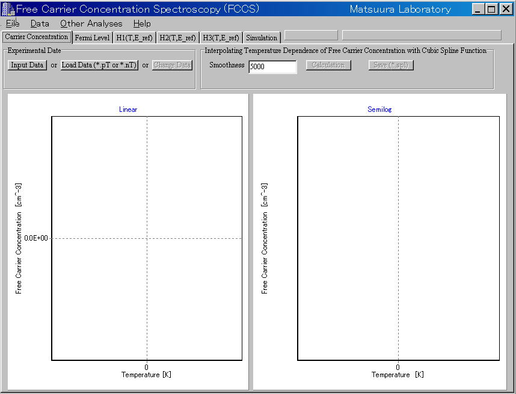

How to use example data
1. Example data are in the "Example"
folder.
File names are *.nT or *.pT.
2. Double-click the FCCSWin1_1.exe in the
"bin" folder
3. Click the "Laod Data (*.nT ro *.pT)"
button or
the "Experimental Data (*.nT or *.pT)"
menu in the "File" menu bar.

4. Select the *.nT or *.pT file in the "Example"
folder.